Anchor Build Guide
Hardware Version: Pilot run
Build time: about 45 minutes per anchor.
A complete robot consists of fours anchors, a gantry, and a gripper. First you should have printed the parts according to the print guide
Tool list
- Mini screwdriver with a bit set
- Soldering station
- Cross locking tweezers
- Mini side cutters
- Super glue (loctite super glue “professional liquid” recommended)
Print the long hexagonal screwdriver bit holder. You will need a brim when printing it. Most precision screwdrivers come with a set of bits with 4mm hex shanks. This is designed to fit those but be long enough to be held in a drill from the outside of this frame.
{kind=link}
Using small dabs of superglue around the ‘shelf’ on the spool, glue the two sides of the spool together. The ‘cup’ of the ring gear should open outwards as shown. 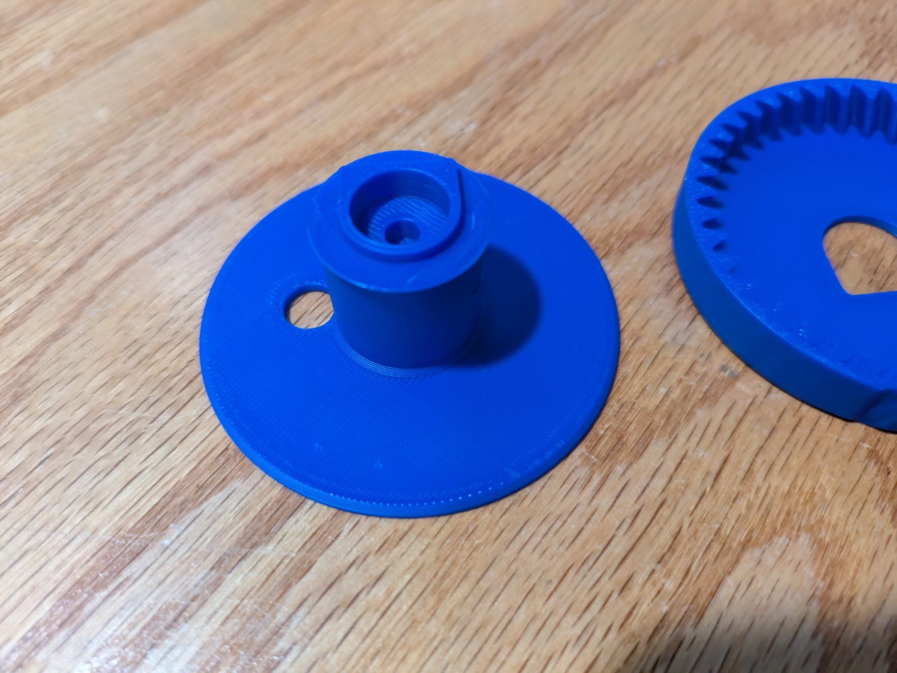 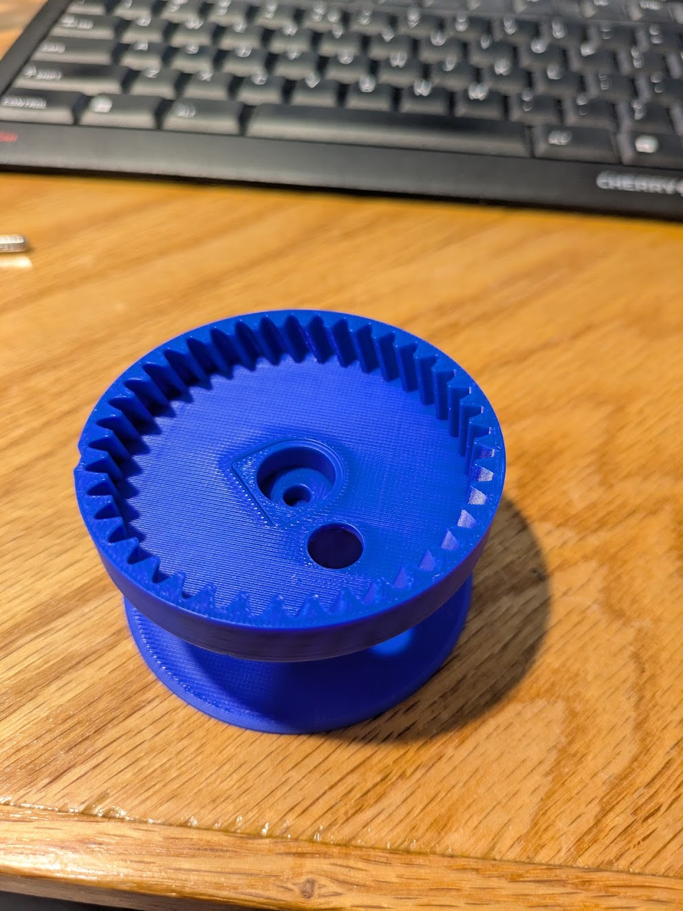
{kind=link}
{kind=link}
Cut away the supporting bridge from this U-shaped region in the frame 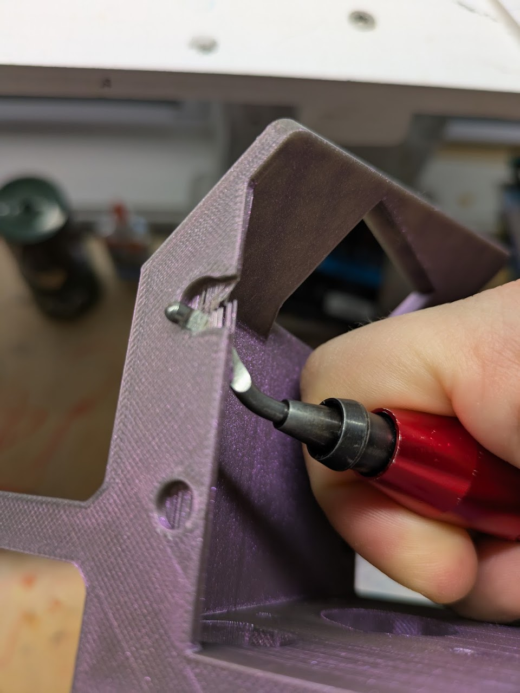 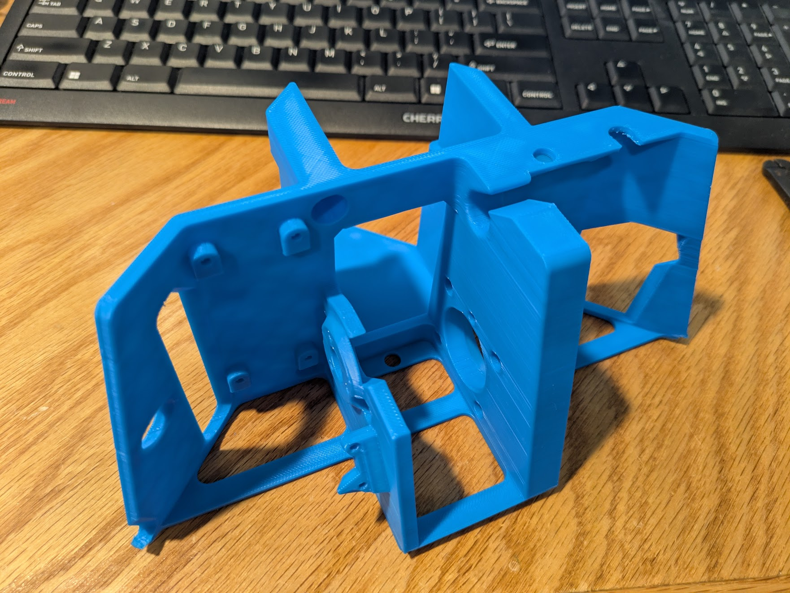
It is unnecessary to cut the bridge out of the hole near it, but harmless to do so.
Notice the two protruding ribs in the middle of the anchor frame. We will refer to them as the thick rib, and the thin rib. The spool goes between them.
{kind=link}
{kind=link}
If the spool is dry by now, press a 4x13x5 bearing into the hole on the ring gear side.
One of the bearings in your kit will have a 4x12mm steel tube pressed into it. Put two m4 washers onto the tube and press this into the hole on the other side of the spool.
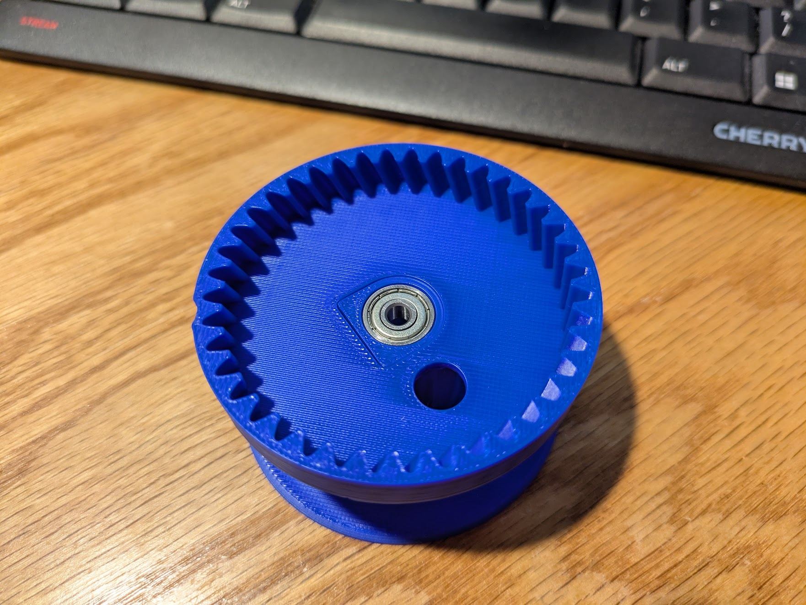 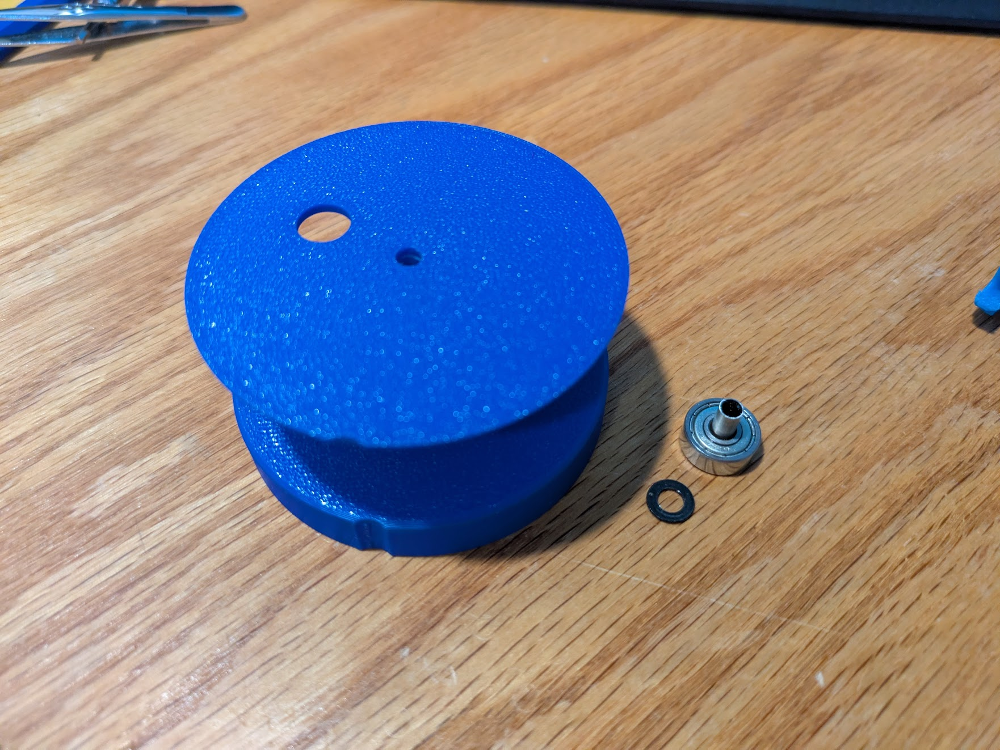 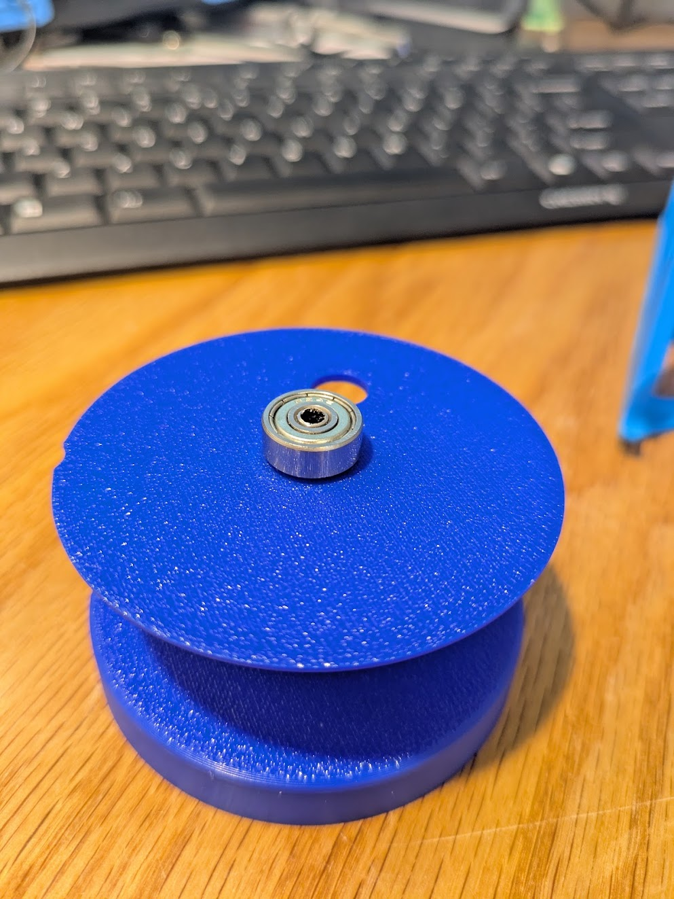
{kind=link}
{kind=link}
{kind=link}
Install the m4 x 25 screw partway into the center hole in the thick rib of the anchor frame. You can use the printed screwdriver with a drill to do it more easily.
Insert all four M3x10 motors screws in their holes. It’s a lot harder to get to them later, but if one falls out, it’s not impossible. Try to keep them from falling out in the next step.
{kind=link}
{kind=link}
Spool installation
Slide the spool into place. The spool’s geared side faces the thick rib. make sure the protruding bearing is completely seated in its slot, and appears centered from the outside.
While holding the spacer in place with cross locking angled tweezers, Tighten the M4 center screw all the way down. It will support the inner race of one of the bearings.
That was the hardest step, it’s downhill from here.
Press the bearing retainer into the void that remains in the thin rib, and put a very small dab of superglue on it. Not near anything that moves.
{kind=link}
{kind=link}
You can see that one of my four M3x10 motor screws fell out. No worries, It is still possible to put it back, I will show you in the next step. Just fetch it out of the gear with your tweezers.
Motor installation
If it has not been done already, Install the short 4-wire jumper of the MKS_SERVO42C between the board and stepper. There is only one possible way it will fit. 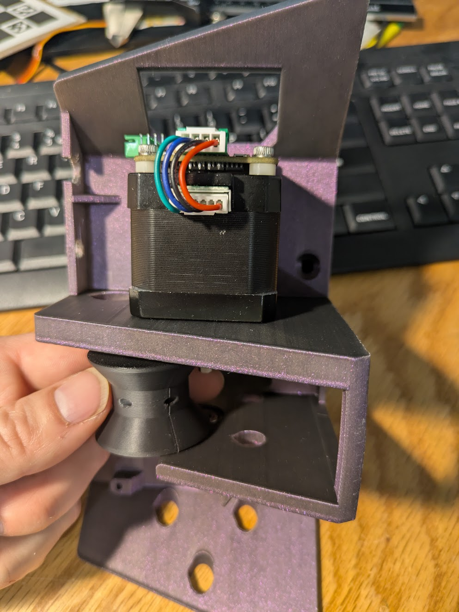
When handling the motor be careful not to ever place it on the PCB. the three buttons can break off.
{kind=link}
Inspect the printed drive gear for flaws such as warping. The quality of this part is very important for keeping noise down. If you see any flaw at all, reprint it. See the print guide for recommended print settings of all parts. 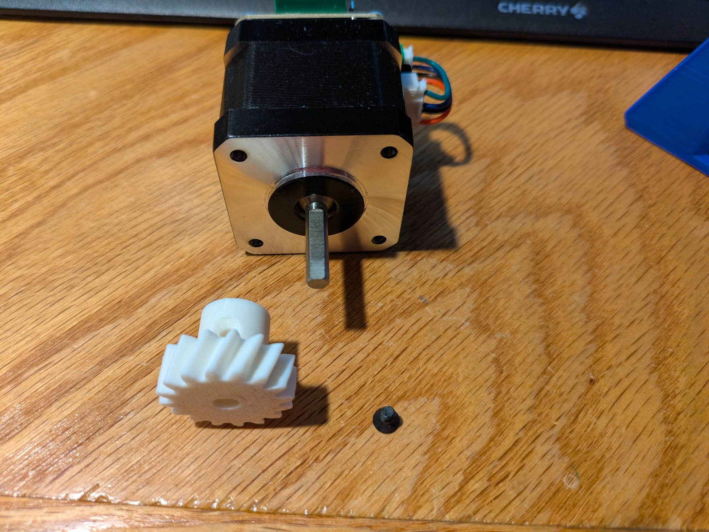 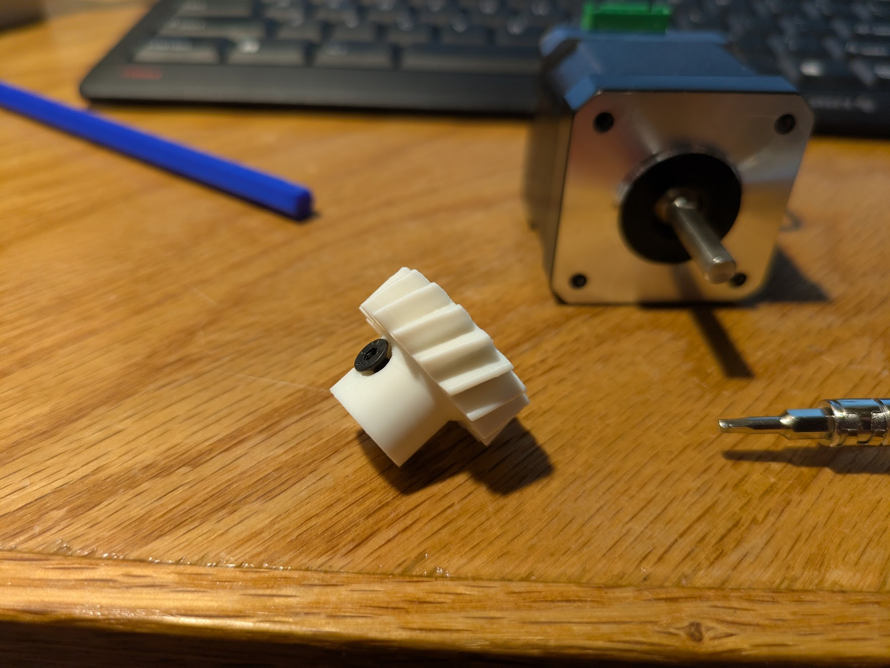 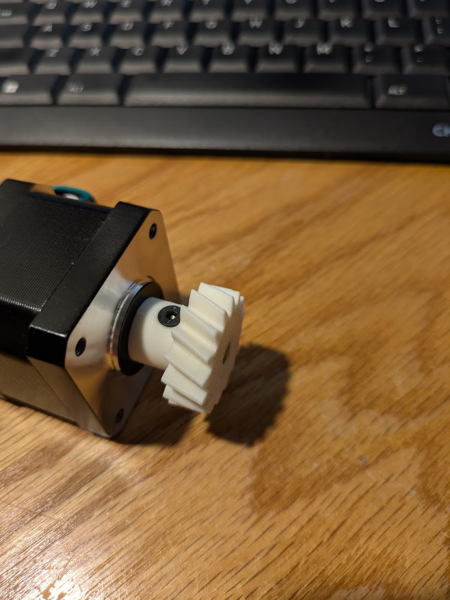
Screw a flat head M3x4 set screw most of the way into the hole on the drive gear.
Press the drive gear all the way onto the motor shaft with the set screw aligned with the D-shaft’s flat face. Tighten the set screw.
Apply a small amount of silicone grease to the drive gear
{kind=link}
{kind=link}
{kind=link}
Place the motor in the frame in the orientation shown below and seat it into place, you might have to wiggle the spool to make the gear teeth mesh.
Using the printed screwdriver, tighten all four screws. Two of the screws will align with the holes in the sool, and two will align with a small indentation on the outer limits of the spool.
If you do not know which bit fits the screws, find another m3 in your kit and check that.
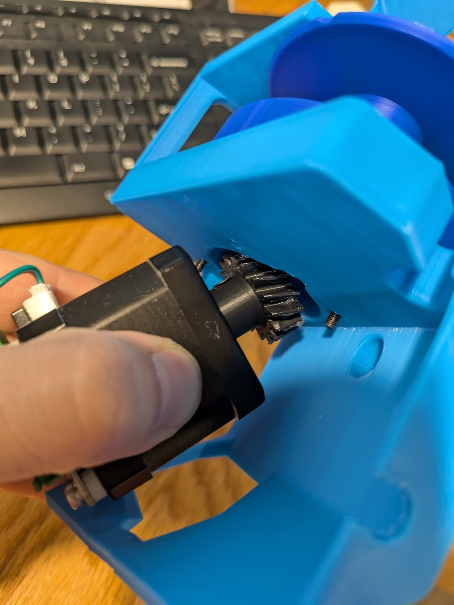 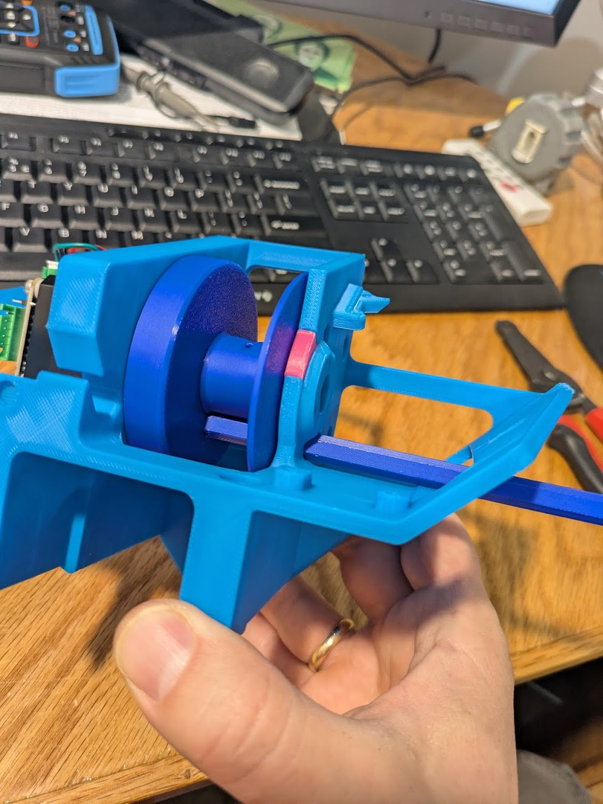 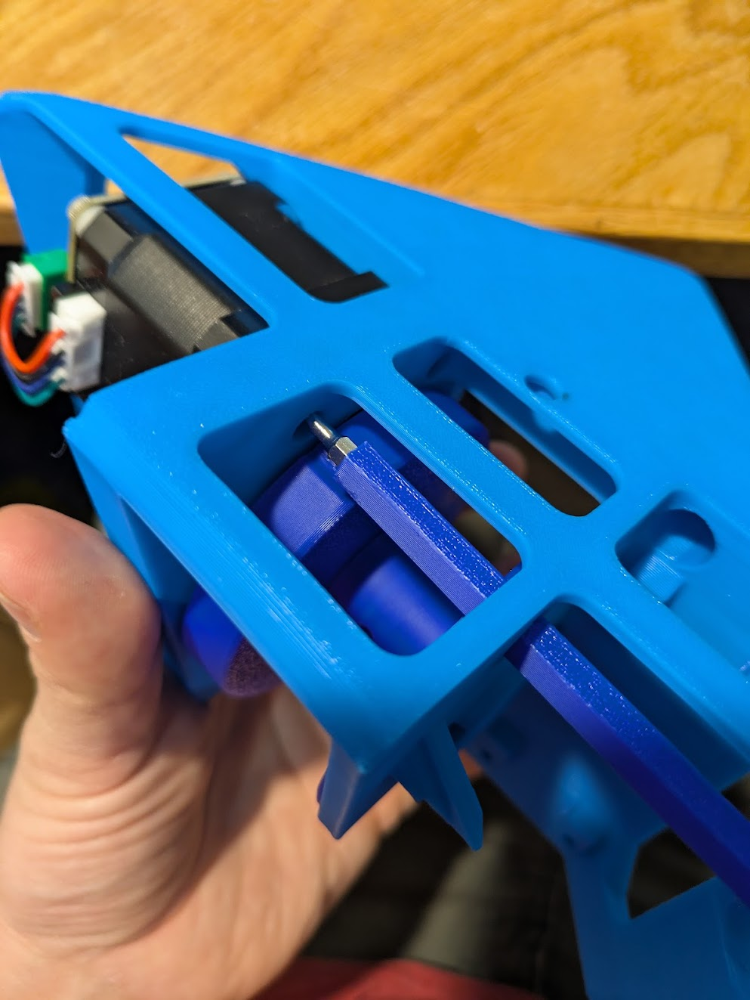
{kind=link}
{kind=link}
{kind=link}
If you have to insert one of your M3x10 screws at this step, you can place it on top of your bit, holding it vertically, and move the part straight down on top with the spool lined up. If that’s too much trouble, then whatever, three screws is enough anyways.
{kind=link}
Spin your spool slowly and confirm it makes a full rotation without excessive friction. If you feel bumps only when moving fast, ignore that, it’s an electrical effect.
{kind=link}
Power supply circuit
Screw a nut onto the DC barrel Jack. (it should come pre-installed, but may fall off in shipping. It’s important this is done before the wiring.
{kind=link}
Get one small DC step down converter from your kit (the green one).
Connect the step down regulator’s inputs to the 24v of the jack. (it’s long leg is negative) with about 2.5 cm of wire between the jack and regulator.
Locate the long cable that came with the MKS_SERVO42C. It has two different ends that are mirrors of each other. Find the end that exactly matches this photo, and cut short all but the red and black wires. We will not be using the others.
Solder the black and red leads also to the barrel jack. The motor will receive 24v from this connector.
Find one of the pre-made double ended red-black-orange-blue connectors. The only two hanging wires on these should be the red and the black coming from the 4-pin connector. Solder these to the output of the DC step down converter.
{kind=link}
{kind=link}
Place this wiring harness into the frame as shown. Push the barrel jack into the U shaped recess and tighten the nut.
{kind=link}
{kind=link}
Plug the wide white plug into the stepper motor control board, and the black serial plug into the small straight standoffs adjacent to it.
The serial plug should be connected such that the blue wire in on the pin labeled TX and the orange wire is on the pin labeled RX
Lead the final 4 pin plug through the hole to the other side of the frame.
The power supply circuit is finished.
For power anchors only
One of the anchors in your robot needs to supply power to the gripper. It doesn’t matter which one, but you need to install the power components on it before the raspberry pi.
Power is supplied to the gripper via a pvc sheathed wire that takes the place of the fishing line, and is transferred via a slip ring at each end.
Take a slip ring and identify the wires that come out of the rotor. Insert these two wires into the metal tube that leads into the center of the spool.
Wiggle and push the wires until they come out of the outlet in the spool’s center. Pull them the rest of the way through. Seat the slip ring in its place and secure it with three M3x4 screws.
Leave the wires that come out of the spool center hanging for now.
Lead the wires from the back end of the slip ring around the frame to the 5v regulator. Trim excess length and solder them to the regulator’s input side. Note, we want the 24v power going into the slip ring, not the 5v.
Raspberry Pi installation
Use the raspberry pi sd card imager tool to create a card that is pre configured with your wifi password, ssh turned on, and a username you can login with.
Setting “pi” as the username and password is standard practice for people who know that real security is only possible if you throw all the electronics in the lake
Insert the SD card into the Raspberry Pi Zero 2 W. Install an aluminum heatsink on the SOC.
Solder a 4 pin straight header on the pins shown in the image.
Screw the raspberry pi down to the frame with four m 2.5 x 4 screws. Note the direction in the photo
{kind=link}
{kind=link}
Connect the 4 pin plug to the straight header with the V+ (red) wire closest to the SD card.
{kind=link}
Open the Raspberry Pi camera Module 3. Take care to ground yourself before handling the camera.
Take out the “mini” ribbon and connect its wide end to the camera. The black painted side of the ribbon goes towards the back side of the PCB and the gold plated side goes towards the camera lens.
To attach a ribbon cable, gently pull out both sides of the plastic retaining clip, insert the ribbon end, and push the retainer back into place.
Discard any other ribbons that shipped with the camera.
{kind=link}
{kind=link}
Mount the camera with two M2x4 screws with the ribbon facing upwards.
Fold the ribbon back and forth to fit it entirely inside the frame and connect it to the raspberry pi with the black face up.
Be careful with the raspberry pi’s ribbon cable retention clip, it is extremely delicate.
{kind=link}
{kind=link}
Assembly is complete!
Plug in your unit to 24v power and confirm both the motor control screen and raspi green light are on.
(Do not run motor calibration, it has been done already and can only be done with a bare shaft)
Proceed with all the raspberry pi software setup now before continuing with the rest of the physical installation.
{kind=link}